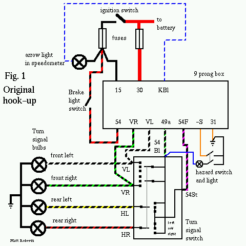
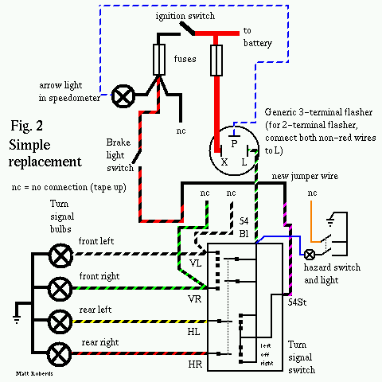
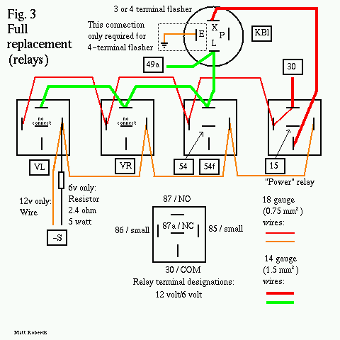
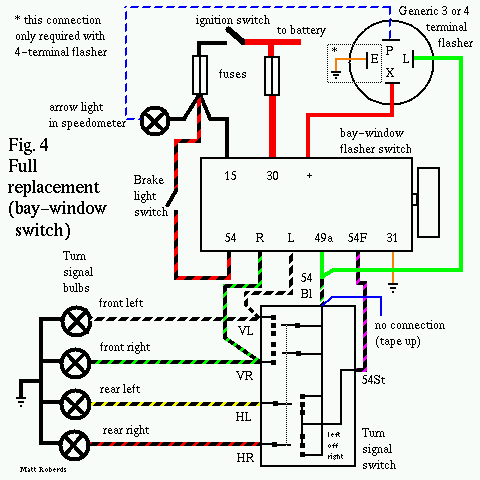

VW 9 Prong Box Troubleshooting and Replacement
by Matt Roberds, mroberds@att.net
Copyright (C) 2000, Matt Roberds. To the best of my knowledge, I believe that this information is true and correct. However, you use any of this information at your own risk.
Introduction
Discussion
Troubleshooting
Replacement
Fangling
Conclusion
Introduction
Volkswagen used a combination flasher and relay on 1966, 1967, and 1968 US-spec Buses for the turn signal and hazard warning functions. 1966 Bugs, and 1967, 1968, and 1969 Bugs and Ghias used a similar relay, without the brake light connections. Similar relays may also have been used on other Types. The Bus relay is commonly known as a "9 prong box". Some vendors sell a kit to replace this box for anywhere from $50 to $70. In this document, I describe the internals of one 9 prong box and discuss how you can bypass it or build your own replacement, using readily available parts, for $15-$30.
Discussion
Note: Some of this discussion will make a lot more sense if you can follow along in the wiring diagram for your VW. Thom Fitzpatrick has put up color scans of *many* air-cooled VW wiring diagrams, not just Buses, at VintageBus.com. Thanks, Thom! I have also made a simple drawing of the original hookup:

The box I disassembled is marked as follows. The
"front" side, with part numbers:
BGR 200.919 12V (VW BLINKGEBER 2x21W logo) WARNRELAIS 4x21W 211.953.227B
The "back" side, with terminal
designations:
(SWF logo) GERMANY
--- --- --- ---
-S 54 KBL 15
--- --- ---
VL VR 54f
--- ---
49a 30
There is a sticker on the bottom, around the terminals, that is marked "12V 21W". It also has the color of the correct wire for each terminal printed around the terminal. There was also a brown ground wire coming out of a hole in the front just under the VW part number.
Here are the functions and colors of the wires
connected to the box:
15 black hot with key on 30 red hot at all times KBl blue/white speedo turn signal indicator 54 black/red input from brake light switch VR black/green right front turn signal wire VL black/white left front turn signal wire 49a black/green/white turn signal pulses to turn signal switch 54f red/purple brake light output to turn signal switch -S brown hazard switch input 31 brown ground (separate wire, not a terminal)
The box is held together by a long rivet through the mounting hole. To get mine apart, I drilled out the rivet head on the "back" side of the box. Then, I pried apart the three snap-locks on the "front" side of the box - one on each side about a quarter of the way from the bottom and one at the top center. The "front" cover can then be removed (feeding the ground wire through the hole) and the guts pulled out of the box.
The guts consist of three relays, eleven resistors, four capacitors, and three transistors. I have not completely mapped this circuitry out, other than to find that one of the transistors simply drives one of the relay coils. Some of the circuit also must detect when a load is placed on the box (by turning on the turn signals or hazard flashers) so it will start operating. I would assume that the other two transistors are in the "classic" multi-vibrator circuit to provide a steady pulse stream.
One of the relays is driven by these pulses. One contact of this relay is connected to battery voltage, and the other is connected to the 49a terminal, through the coil of the second relay, to provide the pulses to the turn signals. In other words, it performs the same function as a two-terminal flasher.
The second relay mentioned above is somewhat special. Most automotive relay coils are wound with many, many turns of very fine wire and are designed to have full battery voltage across the coil. This one, however, is wound with a few turns of heavy wire and is designed to drop very little voltage across the coil. The coil is wired in series between the pulsing battery voltage provided by the first relay and the 49a output to the turn signal switch. One of its contacts is grounded, and the other contact goes to the KBL terminal for the indicator light in the speedometer.
The effect of all this is that this second relay monitors the current being output to 49a. Only if sufficient current flows will the contacts close, causing the speedometer indicator light to illuminate. This is done to provide a lamp failure indication. If one of your turn signal bulbs (front or back) burns out, the other bulb on that side will still flash. However, it will draw about half of the normal current, so this second relay will not activate, keeping the speedometer indicator light off. This is to alert you (the driver) that one of your bulbs is burned out. Note that if both of your turn signal bulbs on one side are burned out or disconnected, nothing will happen when you flip the turn signal lever to that side.
Aside: The older round can flashers also provided this function. Even on semaphore Buses, the speedometer indicator light is not simply in parallel with the semaphore coils and lights, but is instead switched on a separate wire from a switch on the semaphore that only closes when the semaphore is fully extended. The various US and EU regulations usually require this kind of monitoring function for the turn signals.
The third relay is the largest and has four
poles. One side of its coil is connected to terminal 30 (battery
voltage at all times) and the other side is connected to the -S
terminal. The -S terminal is switched to ground by the hazard
switch on the dash to turn this relay on.
One of the poles on this relay is connected to the VR terminal and
another pole is connected to the VL terminal. With the hazards off
(relay unpowered), the relay does not connect VR or VL to anything
else. With the hazards on (relay on), VR and VL are both connected
to 49a. This makes the front turn signals flash regardless of the
position of the turn signal switch.
The third pole performs a similar function for the brake light. The
"wiper" (movable contact) is connected to terminal 54f, the brake
light output. With the hazards off (relay unpowered), the relay
connects 54f to 54, the input from the brake light switch on the
master cylinder. With the hazards on (relay powered), the relay
connects 54f to 49a, so the rear turn signal and stop lamps will
flash regardless of the position of the turn signal switch.
Finally, the fourth pole basically makes sure that the turn signals
only work with the ignition on but that the hazards work anytime.
The "wiper" is connected to everything inside the box that needs
battery voltage to operate. With the hazards off (relay unpowered),
the relay connects the wiper to terminal 15 (battery voltage with
key on). With the hazards on (relay powered), the relay connects
the wiper to terminal 30 (battery voltage on at all
times).
Troubleshooting
First, know that the 9 prong box has nothing to do with your headlights! If you are having trouble with your headlights, look elsewhere. Also, if you can get any of the turn signal bulbs on the car at all to flash, the 9 prong box is not the first place to look. Check out your turn signal switch and the wiring first. Also make sure that the bulbs are not burned out, and that they are well-seated in their sockets. Check all the fuses too.
WARNING: Terminal 30 is a direct unfused feed from the battery! Do NOT let anything connected to this terminal touch anything that is grounded (like all of the body sheet metal) or a major meltdown WILL result! If you have one end of your jumper wire clipped to 30, pay attention to where the other end is. It would be best to use the kind of alligator clips that have a plastic sleeve over them. Consider making a fused jumper wire with a 16 A fuse in an inline holder.
Testing: You will either need a short piece of wire, 12 to 16 gauge (2.5 to 1.0 mm2), with alligator clips on each end, or a friend. With the key off and turn signal and hazard flashers off, pull the wire off terminal VL on the 9 prong box and either touch it to the wire on terminal 30 (with your friend watching the light) or use the alligator clip wire to make the connection so you can go outside and look. If you are friendless, park against a wall so you can see the light reflected at you.
If the left front light doesn't light up when you do this, there is a problem in the wiring, with the bulb, or in the socket. Put the VL wire back on its terminal when you've figured it out. Repeat the same test for VR: pull the wire off of VR and touch that wire to 30 and the right front light should come on. Put the VR wire back when you're done with it.
To test the rear lights (and a partial checkout of the turn signal switch), do this. Pull off the wire connected to terminal 54f and touch it to terminal 30. Make sure both of your rear lights come on. Now, with the key off, flip the turn signal switch into "left turn". Your left rear light should go out but the right one should stay on. Now flip the switch to "right turn" and your left rear light should be on and the right one should be off. If this is not as expected, the trouble is in the turn signal switch, wiring, bulbs, or sockets. Put the wire back on 54f when you're done.
Finally, to finish checking out the turn signal switch, pull off the wire connected to terminal 49a and touch it to terminal 30. Flip the turn signal switch to "left turn" and both the front and rear left turn signal lamps should come on steadily. Flip the switch over to "right turn" and both the front and rear right turn signal lamps should come on steadily. If not, there is a problem in the turn signal switch, wiring, bulbs, or sockets. Put the wire back on 49a when you're done.
To test the speedometer indicator light, pull off the wire connected to terminal KBL, ground it to the body, and turn the ignition on. The indicator light should light up. If not, there is a problem with the ignition switch, wiring, bulb, or socket. Once the indicator light is working, you can use it to check the hazard switch. Pull off the wire connected to terminal -S and hold it and the wire from KBL together (both wires disconnected from the 9 prong box). Turn the ignition on and you should be able to make the speedometer indicator light go on and off by operating the hazard flasher switch. If not, there is trouble in the hazard flasher switch or its wiring. When done, turn off the ignition and replace all wires on their terminals.
To test the warning light in the hazard switch, pull off the wire on terminal "K" on the hazard switch. Run your jumper wire from "K" on the hazard switch to "30" on the 9-prong box. Pull out the hazard switch and the light should come on. If not, either the bulb or socket or the grounding of the hazard switch is the trouble. Remove the jumper and put the wire back on "K" when you're done.
Replacement
There are a few ways to do this. I outline three ways: one that will get you down the road with turn signals and brake lights but no hazard flashers, and two that almost completely duplicate the functions of the original box. Either way is completely reversible - if you find a working 9-prong box later and want to go back, you can do so just by unplugging this replacement and plugging the box back in. All of this assumes that you currently have a stock setup, with no hacking on the wiring.
Disconnect your negative battery cable before fooling around with this! Only hook it back up when all wiring is secure and ready to test.
Note that red push-ons are for 22-18 gauge (0.5-0.75 mm2) wire and blue push-ons are for 16-14 gauge (1.0-1.5 mm2) wire. If you need to connect two 18 gauge (0.75 mm2) wires to one push-on, twist the ends of the wires together and use a blue push-on.
Method 1: Turn signals and brake lights only.

If you don't have to have emergency flashers, you can do the following. You'll need a replacement 6v or 12v flasher (2 or 3 terminal) from the auto parts store, some electrical tape, some 14 gauge (1.5 mm2) wire, and some push-on terminals.
Pull the wire connected to -S off of the 9 prong box and tape up the end. Pull the wire connected to VL off of the 9 prong box and tape up the end. Pull the wire connected to VR off of the 9 prong box and tape up the end. Pull the wire connected to 15 off of the 9 prong box and tape up the end.
Cut a 4"/10cm piece of wire and crimp one male push-on on each end. Pull the wire connected to 54 off of the 9 prong box and connect it to one end of your new wire. Pull the wire connected to 54f off of the 9 prong box and connect it to the other end of your new wire. Tape up these connections, then temporarily reconnect your battery negative cable and make sure your brake lights work. DO NOT DRIVE A CAR WITH THE BRAKE LIGHTS NOT WORKING! When you're happy, disconnect the battery negative again and continue.
Pull the wire connected to 30 off of the 9 prong box and connect it to terminal X on your new flasher. Pull the wires connected to 49a and KBL off of the 9 prong box. If you have a 3-terminal flasher, connect the 49a wire to "L" and the KBL wire to "P". If you have a 2-terminal flasher, connect both the 49a and the KBL wire to "L". You can make up a "Y" cable using one male push-on, two short pieces of wire, and two female push-ons, or use a ready-made adapter. When all this is hooked up, hook the battery back up, and test your turn signals. If they work OK, mount the new turn signal flasher somewhere--just taping or zip-tieing the metal can to one of the wiring bundles is fine. Make sure none of the terminals can ground out on the body. The 9 prong box may still have a ground wire hooked up--disconnect this ground wire and take the 9 prong box out of the car as you don't need it anymore.
Method 2: Turn signals, brake lights, and hazards - relays - nearly exact duplicate of original functionality.

You'll need some 14 gauge (1.5 mm2) wire, some 18 gauge (0.75 mm2) wire, some push-on terminals, a replacement 6v or 12v 3-terminal flasher, and four SPDT relays. If you have a 12v VW and use a #559 flasher, you can get an exact duplicate of original functionality. If your VW is 12v, you can use standard automotive SPDT relays. These are generally available at your local auto parts store, and car alarm and stereo shops. The relay must have five terminals labeled 85, 86, 30, 87, and 87a. If it doesn't have these numbers someplace on the relay, it's not the right kind of relay. Some of the five-terminal relays sold for driving lights and such have 87 and 87a connected together all the time, which won't work. You can make all the connections to these relays with 1/4" push-ons, but there are also standard sockets that may make your life a bit easier. Mouser Electronics carries a suitable relay (526-R51-5D40-12F) for about $6; All Electronics usually has a couple of different suitable relays in stock (RLY-351, RLY-356) for $3 or so, and they also sell the sockets (SRLY-2) for $2 each.
If you have a 6v VW, it's harder to find 6v relays. The most suitable, readily available item I have found is a 5 v Magnecraft/Struthers-Dunn relay from Mouser Electronics, Magnecraft W9AS5D52-5 and Mouser 528-9522-5, $3.50. This relay has sufficient DC contact rating for automotive use, push-on connectors, and a flange mounting. You will also need a 2.4 ohm, 5 watt resistor (Mouser 280-CR10-2.4, $0.60) to reduce the voltage to the relay coils, and some 0.187" (3/16") push-ons.
Suppliers:
Mouser Electronics
958 North Main St.
Mansfield, TX 76063 USA
1-800-346-6873
1-817-483-6848
http://www.mouser.com
All Electronics Corporation
P O Box 567
Van Nuys, CA 91408 USA
1-800-826-5432
1-818-904-0524
http://www.allelectronics.com
I am not affiliated with either company. I have ordered from both
companies in the past and gotten good service. Prices are as of
October, 2000.
In case you're wondering about the "exact functionality" part, it has to do with the indicator light in the speedometer. Originally, this light is on when the outside turn signal lights are on. If you use a generic 3-terminal flasher, the speedometer light will be off when the outside lights are on, and vice versa. The #559 flasher has a separate set of contacts for the indicator light, which lets you wire it to work exactly as the original.
Cut three (6v) or four (12v) 4"/10cm pieces of
18 gauge wire. Make a daisy chain with the wire and five push-ons
like the following. == is wire, | is a male push-on, [] is a female
push-on, and --RR-- is the resistor (6v only).
12v |======[]======[]======[]======[] (all 1/4" push-ons) 6v |--RR--[]======[]======[]======[] (first one is 1/4", rest are 3/16")
Plug each female push-on onto terminal 85 (12v) or either of the small terminals (6v) on a relay. The male push-on goes to the "-S" wire.
Cut four 4"/10cm pieces of 18 gauge wire and one
4"/10cm piece of 14 gauge wire. Make up a daisy chain using six
push-ons like the following. == is 18 gauge wire and ** is 14 gauge
wire.
12v |******[]======[]======[]======[]======[] (all 1/4" push-ons) 6v |******[]======[]======[]======[]======[] (first two 1/4", rest are 3/16")Plug the female push-on with the 14 gauge wire into terminal 87 (12v) or terminal NO (6v) of one relay. Plug all remaining female push-ons into terminal 86 (12v) or the other small terminal (6v) of each relay. Plug the male push-on into the "30" wire. The relay with two push-ons from this string on it is the "power" relay - remember that.
Hook your battery back up temporarily and pull the hazard flasher switch out. All four relays should click when you do this. Push it back in and they should click again. When you're happy, disconnect the battery again.
Cut four 4"/10cm pieces of 14 gauge wire. Make
up a daisy chain using five 1/4" push-ons like the
following.
6v, 12v |******[]******[]******[]******[]Plug the male push-on into the "49a" wire. Plug the next female push-on into the "L" terminal on the flasher. Plug the remaining three push-ons into terminal 87 (12v) or terminal NO (6v) of each of the three relays that have an unconnected terminal 87 or terminal NO.
Plug the "VL" wire into terminal 30 (12v) or COM (6v) on one of the three relays that only has three terminals connected so far.
Plug the "VR" wire into terminal 30 (12v) or COM (6v) on one of the two relays that only has three terminals connected so far.
Plug the "54f" wire into terminal 30 (12v) or COM (6v) on the one remaining relay that only has three terminals connected so far. Plug the "54" wire into terminal 87a (12v) or NC (6v) on this same relay.
Plug the "15" wire into terminal 87a (12v) or NC (6v) on the "power" relay.
Plug the "KBL" wire into terminal "P" on the flasher.
Cut a 4"/10cm piece of 14 gauge wire and put female 1/4" push-ons on each end. Plug one end into terminal 30 (12v) or COM (6v) on the "power" relay and plug the other end into terminal "X" on the flasher.
If your flasher has four terminals (the #559 flasher), you should have one terminal left over, E. Cut a piece of 18 gauge wire long enough to reach a handy ground (like a screw or bolt that goes into the body). Crimp a ring terminal on one end and a 1/4" female push-on on the other end. Put the ring terminal under the screw or bolt and plug the push-on onto the E terminal on the flasher.
Hook the battery back up and try it out! Here's a chart of the proper responses:
Inputs Outputs
---------------------- -------------------------------------------
Turn Hazard Hazard
signal flasher Left Right Left Right Speedo warning
switch switch Brake front front rear rear arrows light
------ ------- ----- ----- ----- ----- ----- ------ ------
off off off off off off off off off
off off on off off on on off off
left off off flash off flash off flash off
left off on flash off flash on flash off
right off off off flash off flash flash off
right off on off flash on flash flash off
any on any flash flash flash flash flash flash
Once you're happy that it's working, you need to figure out where and how to mount the relays. The 12v ones have a handy mounting tab; the 6v ones have notches in their flanges for a mount. I have mounted several of the 12v ones before by attaching them to a strip of pipe strap - a mild steel strap about 3/4" (2 cm) wide with holes in it - and bolting the strip to the body. For the flange mount ones, it might be easier to bolt them to a thin sheet of plastic or metal, and then mount that sheet to the body. Make sure none of the connections can ground out on the body sheet metal! On the 6v version, it is normal for the resistor to get warm in operation - it's dissipating around 2 to 3 watts. So make sure the resistor isn't right up against anything that can melt, like another wire.
Method 3: Turn signals, brake lights, and hazards - bay-window flasher switch - nearly exact duplicate of original functionality.

Thanks to Tom Good and Jim Thompson for their suggestions for this section!
If you don't want to wire up all those relays from Method 2, and you don't mind not having a "stock" hazard flasher knob on your dash, you can use an aftermarket 6v or 12v 3-terminal flasher and a hazard flasher switch from a bay-window Bus, 231-953-235A. If you have a 12v VW and use a #559 flasher, you can get an exact duplicate of original functionality. You'll also need some 18 gauge (0.75 mm2) wire, some 14 gauge (1.5 mm2) wire, some 12 gauge (2.5 mm2) wire, and some push-on terminals. If you have a 6v Bus, you may need to replace the 12v light bulb in the switch knob with a 6v bulb.
In case you're wondering about the "exact functionality" part, it has to do with the indicator light in the speedometer. Originally, this light is on when the outside turn signal lights are on. If you use a generic 3-terminal flasher, the speedometer light will be off when the outside lights are on, and vice versa. The #559 flasher has a separate set of contacts for the indicator light, which lets you wire it to work exactly as the original.
If you can get the 9-prong box wires to reach the dash where the new switch will be installed, great! However, you'll probably have to make extension wires for some of the connections - just a length of wire with a female push-on on one end and a male push-on on the other. When you connect this extension wire to the original wire where the 9-prong box used to be, wrap the connection with electrical tape so it doesn't short out on anything.
Unplug the "K" (blue) wire from your old hazard light switch and tape up the end. Cut a piece of 18 gauge wire long enough to reach from where the 9-prong box was to a handy ground (like a screw or bolt that goes into the body). Crimp a ring terminal on one end and a 1/4" male push-on on the other end. Put the ring terminal under the screw or bolt and plug the "-S" wire onto the male push-on. Unplug the brown wire from your old hazard light switch and plug it onto the "31" terminal on the new switch.
First, plug the "30" wire onto the "30" terminal on the new switch. Use a 12 gauge extension wire as required. Plug the "15" wire onto the "15" terminal on the new switch - for this and all other extension wires, you can use 14 gauge wire. Plug the "54" wire onto the "54" terminal on the new switch, and plug the "54f" wire onto the "54f" terminal on the new switch.
Hook your battery back up temporarily, turn on the ignition, and step on the brakes - your brake lights should be on. Pull the hazard flasher switch out, and your brake lights should go off. When you're happy, disconnect the battery again.
Plug the "VR" wire onto the "R" terminal on the new switch, and plug the "VL" wire onto the "L" terminal on the new switch. Make up a 12 gauge wire about 6" (15cm) long with female push-ons on each end. Plug one end onto the "+" terminal on the new switch and the other end onto the "X" terminal on the new flasher. Plug the "KBL" wire onto the "P" terminal on the new flasher. Make up a "Y" cable with two 14 gauge wires, each about 6" (15cm) long. Twist these two wires together on one end and crimp a male push-on on the twisted wires. Crimp a female push-on on the other two ends. Plug one of the female push-ons onto the "L" terminal on the new flasher, and the other one onto the "49a" terminal on the new switch. Plug the male push-on onto the "49a" wire, and wrap this connection with electrical tape.
If your flasher has four terminals (the #559 flasher), you should have one terminal left over, E. Cut a piece of 18 gauge wire long enough to reach a handy ground (like a screw or bolt that goes into the body). Crimp a ring terminal on one end and a 1/4" female push-on on the other end. Put the ring terminal under the screw or bolt and plug the push-on onto the E terminal on the flasher.
Hook the battery back up and try it out! See the chart above for the proper responses. When you're happy, you need to figure out where to mount the new flasher - just taping or zip-tieing the metal can to one of the wiring bundles is fine. Make sure none of the terminals can ground out on the body.
Fangling
You can use a Bus relay on a Bug and just ignore the terminals for 54 and 54f, as long as the voltage matches.
You can use a Bug relay on a Bus, as long as the voltage matches, by adding one external relay for the brake light function. If anyone wants detailed directions for this, let me know.
Someone asked about adding hazard flashers to a Bus that didn't have them from the factory. Probably the simplest way to do this using stock VW parts is to use the hazard light switch and relay from a '63, '64, or '65 Bus. You could also use a 9-prong box or the 9-prong box replacement I have described above. When using the '63-'65 switch and relay, the hazards will only work with the ignition key on.
Method 1: Adding hazard flashers to a
'58-'62 bus with the '63-'65 switch and relay. It appears that the
switch simply connects all four of its terminals together when
activated, so exact terminal assignment is not important. First,
disconnect your battery negative cable.
Run a 14 gauge wire from one terminal on the switch to terminal 54
or S on your existing turn signal flasher. Both the stock wire and
this new wire should be connected to 54 or S.
Run a 14 gauge wire from another terminal on the switch to the left
rear lamp wire at the turn signal switch connector - the
black/yellow stripe wire. Again, connect this new wire in addition
to the existing wire.
Run a 14 gauge wire from another terminal on the switch to the
right rear lamp wire at the turn signal switch connector - the
thicker of the two black/orange stripe wires. Again, connect this
new wire in addition to the existing wire.
Temporarily reconnect the battery, turn on the ignition, and turn on the hazard switch. Both rear lights should flash. The front ones will not flash yet. Note: If you step on the brake, the rear lights will probably light up steadily as long as you are stepping on the brake, then go back to flashing when you let off. When you're happy, disconnect the battery and proceed.
Run an 18 gauge wire from the last terminal on
the switch to terminal 86 on the relay.
If the relay has a terminal 85, run an 18 gauge wire from it to
ground (body sheet metal.) If not, the relay grounds through its
case. Make sure the relay is well-mounted to the body for a
ground.
Run a 14 gauge wire from terminal 30 on the relay to terminal 15 on
your existing turn signal flasher. Both the stock wire and this new
wire should be connected to 15.
Run a 14 gauge wire from terminal 87 on the relay to the left front
lamp wire at the turn signal switch connector - the black/white
stripe wire. Again, connect this new wire in addition to the
existing wire.
Run a 14 gauge wire from terminal 87a on the relay to the right
front lamp wire at the turn signal switch connector - the
black/green stripe wire. Again, connect this new wire in addition
to the existing wire.
Connect the battery back up and try it. All four lights should flash when you pull out the switch. As before, the rear lights will probably light steadily if you step on the brakes with the hazard flashers on, although the front lights will continue to flash.
Method 2: Adding hazard flashers to a '58-'62 Bus using a 9 prong box or the replacement discussed above. For 6 volt systems, use the '66 9 prong box, and for 12 volt systems, use the '67 or '68 9 prong box. For either system, you'll need a simple on-off switch for the hazards. Start by disconnecting the battery negative cable.
Swap wires from existing turn signal flasher to
new 9 prong box:
Pull the wire off of 15 on the turn signal flasher and connect it
to 15 on the 9 prong box.
Pull the wire off of 54 or S (black with green and white stripes)
on the turn signal flasher and connect it to 49a on the 9 prong
box.
Pull the remaining light blue/white stripe wire off of the turn
signal flasher and connect it to KBL on the 9 prong box.
Ground the brown ground wire coming out of the 9 prong box.
Temporarily reconnect the battery and try your turn signals - they
should work just like they did before. When you're happy,
disconnect the battery again and proceed.
Run a 14 gauge wire from terminal VL on the 9
prong box to the left front lamp wire at the turn signal switch
connector - the black/white stripe wire. Again, connect this new
wire in addition to the existing wire.
Run a 14 gauge wire from terminal VR on the 9 prong box to the
right front lamp wire at the turn signal switch connector - the
black/green stripe wire. Again, connect this new wire in addition
to the existing wire.
Run a 10 gauge wire from terminal 30 on the 9 prong box to the top
end of your leftmost fuse - the one that should already have two
thick red wires on it.
Run an 18 gauge wire from terminal -S on the 9 prong box to one
terminal of your new switch. Run an 18 gauge wire from the other
terminal of your new switch to ground.
Disconnect the brake light wire at the turn signal connector - the
skinnier of the two black/orange stripe wires. Connect the harness
end to a piece of 14 gauge wire and run this wire to 54 on the 9
prong box. Run another 14 gauge wire from 54f on the 9 prong box to
the turn signal end of the wire you just disconnected.
Hook the battery back up and try it! The proper operation should be the same as in the chart above. The hazards should work with the ignition on or off, and stepping on the brakes with the hazards on will have no effect.
Conclusion
When you're done, check again that your brake lights are working properly. They're important!
I hope this helps! Please let me know if you find errors or omissions in this document.
Last updated Sun Dec 31 18:49:28 CST 2000